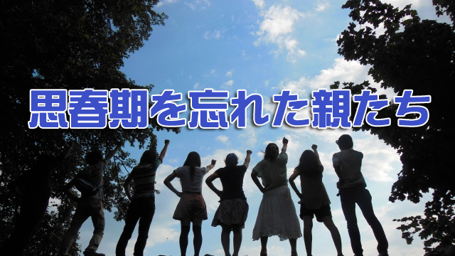

先日たまたまテレビを観ていたら、バック・トゥ・ザ・フューチャーというアメリカ映画の再放送（パート１）をやっていた。もう何度も観ている映画だが今回もしっかり観てしまった。やはり傑作は何度観ても面白いと思った。
放送直前、高校生の息子がバック・トゥ・ザ・フューチャーに出てくるビフ（いじめっ子）のモデルがトランプ大統領だと言い出し、家族皆で大笑いした直後だったので、この偶然の一致も何だか面白かった。
この映画は既に多くの人が知っているように主人公の男の子（高校生）が、ちょっとイカレた博士の発明したタイムマシーンで30年前に戻り、高校生である両親の仲を取りもつ冒険譚である。
今回気になったのは主人公の母親の言動で、息子がガールフレンドとデートするのを知ったとき「私が若い頃（高校時代）は男の子を追い回したりする女じゃなかった」と暗に息子の彼女を批判するところだ。それなのにタイムトラベルした主人公に、女子高生である母親は何と一目ボレしそのあげく積極的に追い回すのである！
主人公である息子はその若き母の実像に仰天するわけだが、映画的な皮肉を割り引いても私はこのシーンにはとても興味をひかれた。
つまり母親は自分の思春期を忘れているということ！
この映画の母親に限らず人は「思春期の自分」を忘れがちだ。当時の自分がどんな振る舞いをしていたか、どんな言動をしてどんなことを考えていたか。そしてどんなに親や周囲の人たちを心配させていたかなど、そういう都合の悪いことも含めほとんど覚えていないのだ！
そうして自分が親になると「ウチの子は何とダラシないのか。私はもっとマジメだった」などと言う。これは単に自分の過去を忘れたからでなく記憶そのものを改変している（笑）。最初から自分は真面目だった。もっとちゃんとしていたと信じ込んでいるのだ。
なぜ分かるかと言うと、私が塾を始めた30年前も親たちはまったく同じ感想を述べていたからだ。「ウチの子どうしてこうなんでしょうね。私はもっと真面目だったのですけど…」と。
こうして世代は代わっても親たちは自分の「輝かしい過去」と、我が子の「受け入れ難い現状」を比較し嘆き続けるのだろう。
それは年を取ると「近ごろの若い者は…」と嘆くことに似ている。あるいは若き日の苦しかったこと、悲しかったこと、失敗した記憶も歳月と共に風化し美しい思い出に変容するように、人には過去を正当化したい習性があるのかも知れない。
いずれにせよ、私たちは思春期（若い頃）の自分を忘れ若者たちの不品行や過ちを嘆く傾向がある。逆に言うと自分たちのかつての「愚かさ」を忘れるからこそ我が子や若者を教育することができるのかも知れない。
だから親たちは子どもの行状にあまり敏感に反応しなくてもよいのだ。なぜならそれは自分もかつて通った道だからだ。そのことを少し思い出せばもっと子どもたちを寛容に見守ることもできるだろう。
なにしろ思春期の子どもたちは要領が悪く、試行錯誤し時に道に迷うこともある。やるべきことをやらず、やらなくてよいことをやってしまったりする。しかしそれは当たり前なのだ。そうして人は学んでいくのである。あなたもそうであったように。
だから親であるあなたは子どもの背後から少し距離を置いて彼らを温かく見守る姿勢でいることだ。多少ハラハラすることはあっても我が子は大丈夫だと信頼し、許容範囲を少し広げそのラインギリギリまで辛抱すること。ならば子供は不思議なことにそのラインを超えることはない。
あなたの親も同じ気持ちであなたを見守っていたのだ。
今こそ、そのことを思い出して欲しい。
とマァ、映画を楽しみながらもそんなことを取りとめもなく考えていたのだった。